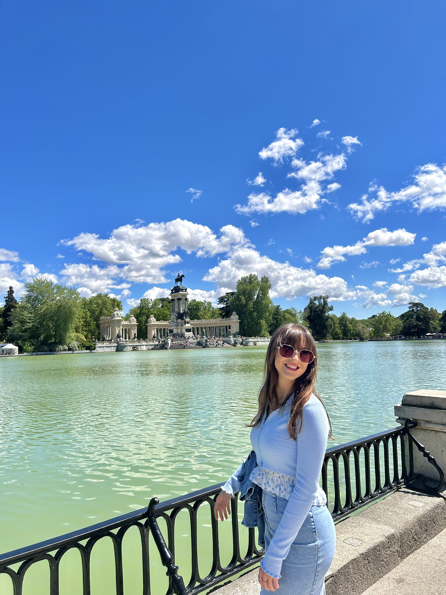

ABOUT ME
En esta página podrás conocer un poco más sobre mí.
Descripción personal
Nerea Rubio es una joven de 19 años que reside en Donostia y se encuentra en su segundo año de estudios de Comunicación + Tecnología audiovisual y multimedia en la Universidad de Deusto. Antes de iniciar su grado, cursó sus estudios desde la infancia hasta el bachillerato en el colegio Jesuitak, ubicado en gros.
Estudios realizados
- Primaria, ESO y Bachillerato en Jesuitak
- Actualmente cursando el grado Comunicación + TCAM en la Universidad de Deusto
Gustos y aficiones
Aitana "ALPHA" disco
Pasar tiempo en Ezcaray
Leer
Experiencia laboral
Mi experiencia laboral se centra en mi trabajo en Sureuskadi en San Sebastián, donde he sido parte del equipo de staff para eventos. He tenido la oportunidad de trabajar en casos destacados como el Zinemaldi, Estropadak, en el Circo del Sol, en Anoeta, entre otros eventos importantes. En estas funciones, mi enfoque ha sido proporcionar un servicio excepcional al cliente, priorizando su satisfacción y necesidades en cada ocasión. Colaborando estrechamente con mis compañeros de equipo. Aunque mi experiencia es aún limitada, me enorgullece la calidad de servicio que he brindado y estoy ansioso por seguir aprendiendo y creciendo profesionalmente en nuevos desafíos laborales. Para conocer más sobre Sueruskadi y obtener información adicional, pincha aquí.